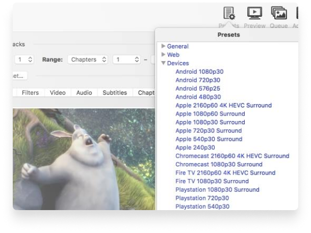

Handbrake
The open source video transcoder
HandBrake is a tool for converting video from nearly any format to
a selection of modern, widely supported codecs

Convert video from nearly any format
Free and Open Source video converter
Multi-Platform desktop application
Just a few reason you will love HandBrake

Optimised for easy use
Built-in Device Presets
Get started with HandBrake in seconds by choosing a profile optimised for your device, or choose a universal profile for standard or high quality conversions. Simple, easy, fast. For those that want more choice, tweak many basic and advanced options to improve your encodes.
Modern video formats
Supported Input Sources
Handbrake can process most common multimedia files and any DVD or BluRay sources that do not contain any kind of copy protection.